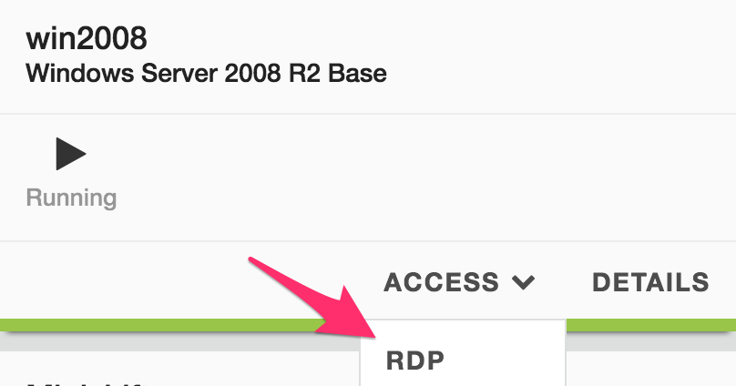
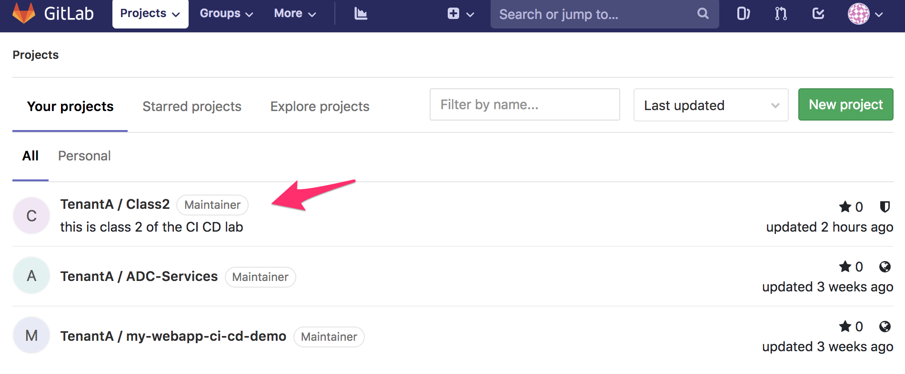
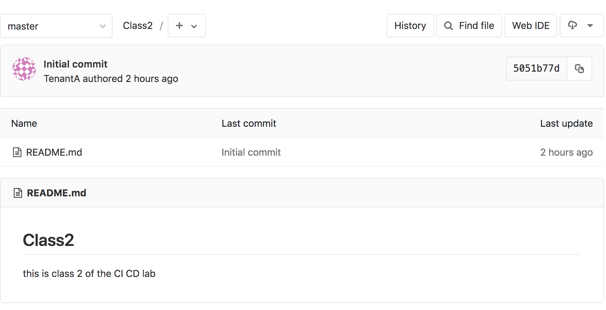
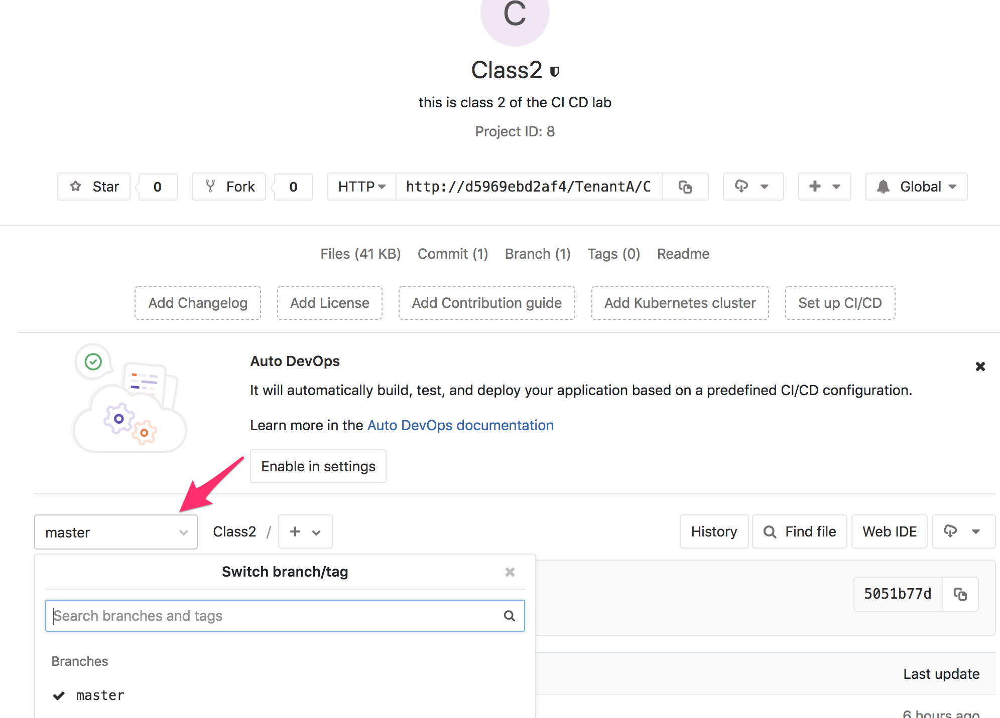
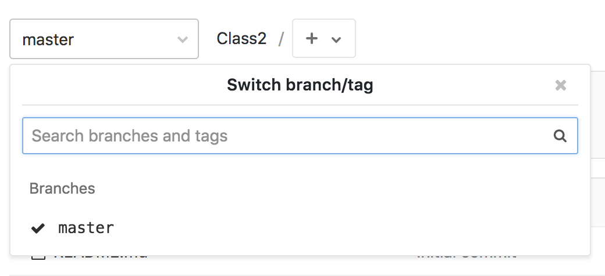
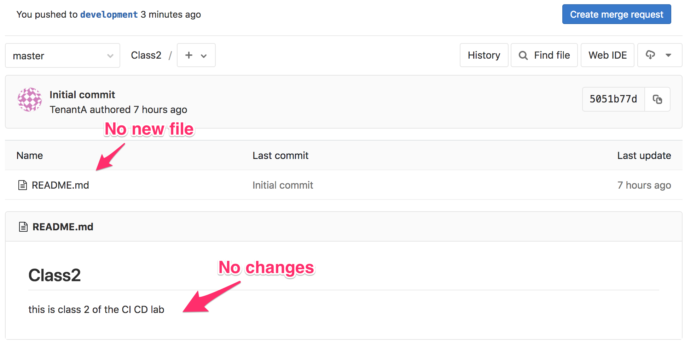
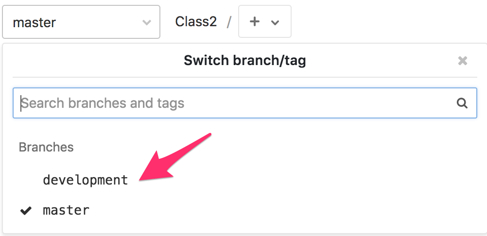

Update the GitLab repo¶
Access GitLab¶
In this lab, we will update our new repo called Class2 on GitLab.
Connect to GitLab. It should be http://<IP of your VM>:1080/
- Login: TenantA
- Password: Pa55w0rd
Note
If you use UDF (F5 private cloud), you may use the RDP Jumphost to access GitLab or the direct HTTP access from UDF interface
{kind=link}
{kind=link}
{kind=link}
On GitLab, Click on the project class2
{kind=link}
You will see this:
{kind=link}
It is fairly rare that people will handle/manage their repositories (repo) through the GUI. People will use git commands to handle it. git is available through well known editors like VS Code, Atom, … but it can also be managed through CLI. We will use our CLI to do this lab.
Update the new repo¶
for this lab we will consider the following:
- If you use your own lab, you’ll need access to the VM hosting GitLab from your terminal (via SSH)
- If you use UDF. you can either use the Jumphost and the Git Bash app OR
open a SSH connection to the CI/CD System
Once you are connected to your system, we need to retrieve our repo. Our repo is available on Gitlab on a URI that is structure this way: /<Tenant Name>/<Project Name>.git
Run the following command:
git clone http://<your VM IP>:1080/TenantA/Class2.git
Note
you need to make sure that git is installed on your system.
You should see the following:
[centos@ip-10-1-1-5 ~]$ git clone http://10.1.1.5:1080/TenantA/Class2.git
Cloning into 'Class2'...
Username for 'http://10.1.1.5:1080': TenantA
Password for 'http://TenantA@10.1.1.5:1080':
remote: Enumerating objects: 3, done.
remote: Counting objects: 100% (3/3), done.
remote: Total 3 (delta 0), reused 0 (delta 0)
Unpacking objects: 100% (3/3), done.
Note
Remember that the login is TenantA and password is Pa55w0rd
We can see now that a new directory is available called Class2. Go into this directory and check the content
[centos@ip-10-1-1-5 ~]$ ls
ci-cd-env-setup Class2
[centos@ip-10-1-1-5 ~]$ cd Class2
[centos@ip-10-1-1-5 Class2]$ ls
README.md
[centos@ip-10-1-1-5 Class2]$ cat README.md
# Class2
this is class 2 of the CI CD lab
Now we have a copy of our repo locally. However any changes done locally will not be replicated automatically on GitLab.
run the following command:
git branch
You should see this:
[centos@ip-10-1-1-5 Class2]$ git branch
* master
This is also what we see in the GUI of GitLab
{kind=link}
As we can see in the GUI, right now we have only one branch and it is called master. Usually we consider the master branch, the offical branch of the repo. This is the branch you usually want to check for the latest viable/stable/recommended version of a repo.
When people want to work on a new version of the project, a new feature of the project, an extension to it, … they will create a new branch. By default, this new branch will be identical to the master branch until you start changing stuff in it. We will be able to merge later our changes into the master branch (when required)
If you want to know more about branch, you can review this link: Branch.
Let’s create our new branch, we will call it development
run the following commands:
git branch development
git branch
git checkout development
git branch
You should see something like this:
[centos@ip-10-1-1-5 Class2]$ git branch
* master
[centos@ip-10-1-1-5 Class2]$ git branch development
[centos@ip-10-1-1-5 Class2]$ git branch
development
* master
[centos@ip-10-1-1-5 Class2]$ git checkout development
Switched to branch 'development'
[centos@ip-10-1-1-5 Class2]$ git branch
* development
master
[centos@ip-10-1-1-5 Class2]$
When you run the git branch command, it will show you all the branches you have
but also which branch is active. You can see the active branch by the “*” before
the branch name
We have a new branch now called development and we will work on it. Remember that our changes are LOCAL. Nothing is yet on GitLab. You can review this by checking your GitLab GUI again and look for a new branch.
{kind=link}
Let’s update the README.md file and create a new file.
To create the new file, run the following command:
echo "git is awesome" > GitRocks
To update the README.md file, run the following command:
echo ".Welcome to this Lab" >> README.md
If you check your folder now, you should have a new file called Gitrocks and an updated README.md file
We need to push our changes on GitLab:
git add .
This command will add files to the index
git commit -m "this is our first git push"
This command will record the changes in our repository and add a message related to our changes
git push origin development
This command will update the remote repo on GitLab and create the relevant branch on GitLab
You should see something like this:
[centos@ip-10-1-1-5 Class2]$ git add .
[centos@ip-10-1-1-5 Class2]$ git commit -m "this is our first git push"
[development 1e98130] this is our first git push
Committer: Cloud User <centos@ip-10-1-1-5.us-west-2.compute.internal>
Your name and email address were configured automatically based
on your username and hostname. Please check that they are accurate.
You can suppress this message by setting them explicitly:
git config --global user.name "Your Name"
git config --global user.email you@example.com
After doing this, you may fix the identity used for this commit with:
git commit --amend --reset-author
2 files changed, 3 insertions(+), 1 deletion(-)
create mode 100644 GitRocks
[centos@ip-10-1-1-5 Class2]$ git push origin development
Username for 'http://10.1.1.5:1080': TenantA
Password for 'http://TenantA@10.1.1.5:1080':
Counting objects: 6, done.
Delta compression using up to 4 threads.
Compressing objects: 100% (3/3), done.
Writing objects: 100% (4/4), 389 bytes | 0 bytes/s, done.
Total 4 (delta 0), reused 0 (delta 0)
remote:
remote: To create a merge request for development, visit:
remote: http://d5969ebd2af4/TenantA/Class2/merge_requests/new?merge_request%5Bsource_branch%5D=development
remote:
To http://10.1.1.5:1080/TenantA/Class2.git
* [new branch] development -> development
If you check your GitLab GUI, refresh the GUI. You’ll see that the master branch doesn’t have any of our changes
{kind=link}
If you click on the dropdown list where master is selected, you’ll see that a new branch has been created. Select the development branch.
{kind=link}
Here you can see that:
- we see our new file GitRocks
- you can see that the README.md file has been updated
{kind=link}